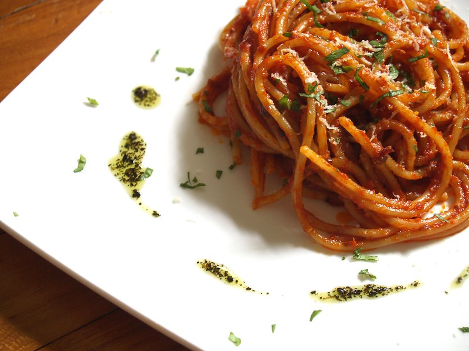

Spicy Arrabbiata Sauce

"Spaghetti All' Arrabbiata" by Sebastian Mary is licensed under CC BY-SA 2.0. To view a copy of this license, visit Creative Commons
Description
Arrabbiata sauce is a fun, spicy tomato sauce, sure to please all pasta enjoyers.
Ingredients
- 1 teaspoon olive oil
- 1 sweet onion, chopped
- 1 pepper (preferably red), chopped
- 2 carrots, chopped
- 3 cloves garlic, minced
- 1 can (15 ounce) crushed tomatoes
- 1 can (15 ounce) diced tomatoes
- 1/2 cup red wine
- 2 tablespoons tomato paste
- 1 tablespoon white sugar
- 2 tablespoons crushed red pepper flakes
- 2 tablespoon italian seasonings
- 1 tablespoon chopped fresh basil
- 1 tablespoon chopped fresh parsley
- 450g ground beef or turkey
- 450g dried spaghetti
Steps
- In a large pan, heat the oil over medium. Add the sliced onion and garlic. Cook, stirring occasionally until the onion becomes translucent and the garlic fragrant.
- Add carrots and pepper, cook until they begin to soften.
- Add ground beef. Cook until brown.
- Add tomato cans and tomato paste. Add seasonings except parsley. Get the sauce to a simmer and allow to sit and thicken.
- Boil water in a large pot. Add pasta to water once boiling.
- When the pasta noodles are al dente, strain the pasta out of the pot. Add the pasta back to the pot and pour the sauce over the pasta. Stir well.
- Serve in a wide, shallow bowl and garnish with parsley.
Return Home